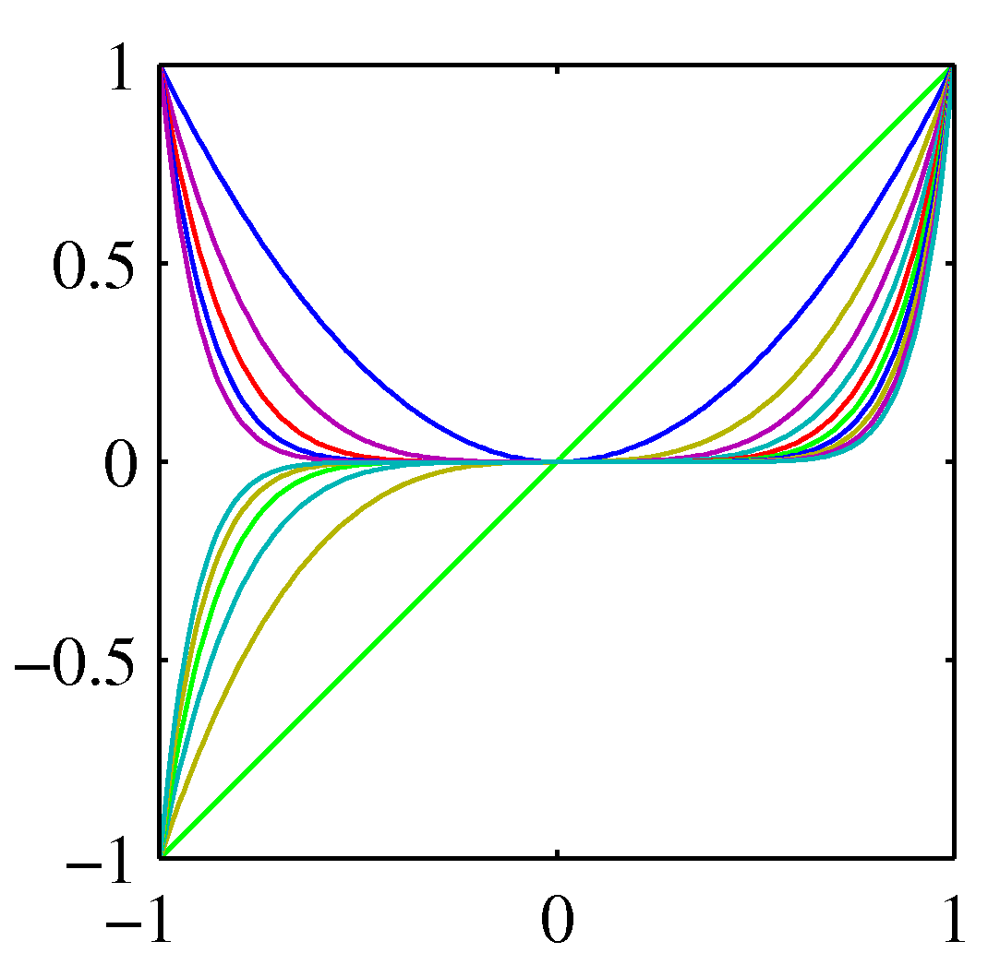

Kernels and the Kernel Trick
Introduction
In linear regression we have seen a simple dataset from an unknown non-linear target function. We then proceeded and chose a hypothesis from the polynomial family that mapped each input example $x$ into a function $g(x, \mathbf w) = \mathbf w^T \phi(\mathbf{x})$, found the optimal $\mathbf w$ by maximizing the likelihood (ML) function using the MSE as the loss function. The moment we have $\mathbf w$ we can use it to do new predictions. In this regression problem we have used a transformation from the raw data $\mathbf x$ to the feature $\phi(\mathbf x)$ and more specifically we have used basis functions $\phi_i(\mathbf x)$ from the set of polynomials shown below.
 Polynomial basis functions
We could have chosen other sets as well:
 Gaussian basis functions
Gaussian basis functions
In classification, we have seen lastly logistic regression which despite the non-linear (probabilistic) interpretation of its output it is still a linear classifier as it presents a linear decision boundary - linear in the feature space $(\mathbf{w}^T\mathbf{x})$. Which posses the question: what we do when we have a problem that has a non-linear decision boundary? The answer is via the concept of kernels that we describe next.
Motivation
Lets revisit the perceptron algorithm where we started from $\mathbf{w}=\mathbf{0}$ (or a random vector) and we visited each and every example, changing the direction of the decision boundary when we met a miss-classified example. In the plots of that lecture for example we have seen that after two misclassified examples (the green circled examples indexed 9 and 6) the algorithm converged to a final $\mathbf{w}$. Note that the indices9 and 6 selected here are arbitrary. These two steps can be written as:
$\mathbf{w}^{(1)} = \mathbf{w}^{(0)} + \mathbf{x}^{(9)}$
$\mathbf{w}^{(2)} = \mathbf{w}^{(1)} + \mathbf{x}^{(6)}$
We can compress this into $\mathbf{w}^{(2)} = \mathbf{w}^{(0)} + {\mathbf{x}^{(9)} + \mathbf{x}^{(6)}}$ and in addition this example indicates that we just need to keep the so called sparse representation where we represent the final $\mathbf{w}$ with the array ${[9, +1], [6, +1]}$, where “+1” happened to be the class of the two examples involved in the adjustment of the weight. Saying it a bit differently, the algorithm results in the set of points that are miss-classified throughput the journey of visiting each and every of our examples.
For non-linear decision boundaries, the straightforward approach we can take is to throw into the problem more features. This is visualized as shown in this animation for one of the datasets we have seen in Tensorflow Playground where we admitted that neither the perceptron or logistic regression cannot separate the two classes.
In the visualization above we added the feature $\mathbf{x}^2$ and therefore expanded the feature space $\phi$ to ${\mathbf{x}, \mathbf{x}^2}$ and surely in the expanded space there is a linear decision boundary (a plane) that can separate the previously the linearly inseparable classes. Moreover this plane can be found by various linear classification methods and for the perceptron we can then using the same reasoning as above we can end up with a sparse representation for the weight that is normal to the plane and can be written as:
${\phi(\mathbf{x}^{(k)}), …, \phi(\mathbf{x}^{(d)})}$
that we can also programmatically represent as a linked list as before.
The problem with adding more features is that in high dimensional spaces (e.g. medical imaging) we may end up with problems of very high number of dimensions as we start from a large number of dimensions to begin with. For example, in imaging we are dealing with at least as many dimensions as the number of pixels in the image and sometimes many more. So although with the sparse representation we have avoiding writing down $\mathbf{w}$ explicitly in the high dimensional space as we can represented as a linked list of indices and labels of the examples of interest, we still need to make operations on those high dimensional examples and therefore the problem now becomes how to avoid the explicit specification of $\phi(\mathbf{x})$. This is what we do with the kernel trick described next.
Where in the perceptron algorithm we need to make operations in high dimensional (expanded) space? Hint: How do we determine if the example is a misclassified during training? How we make inference predictions?
Kernel trick
Now that we have motivated the need for the trick lets see what the trick is after all.
The dot product $\mathbf{w}^T\phi(\mathbf{x})$ will be needed throughout training as well as inference.Given the sparse representation obtained earlier we realize that we will be dealing with lots of dot products of the form $\phi(\mathbf{x}^{(k)})^T \phi(\mathbf{x})$.
The kernel trick at a high level is this: instead of doing these dot products in the expanded high dimensional space, we will do them in the original lower dimensional space saving significant computations (even ensuring feasibility in some cases). The trick, no matter how unbelievable it may look at a first glance, is becoming a reality by choosing suitable kernels
$$k(\mathbf x_i, \mathbf x_j) = \phi(\mathbf x_i)^T \phi(\mathbf x_j)$$
$$= \sum_{i=1}^M \phi_i(\mathbf x_i)^T \phi_i(\mathbf x_j)$$
where $\phi_i(\mathbf x)$ are basis functions. Lets look at an example to see in practice the properties of such kernel functions.
Lets look at the kernel function we used in the previous example where we expanded the space to include a quadratic term but now we include all quadratic terms that correspond to basis function from the polynomial set. This means $\phi(\mathbf x) = (x_1^2, x_2^2, x_1 x_2)$. Lets us now form the dot product at the feature space and see if this choice of basis function has the property that this dot product can be written as a dot product of terms in the original space.
$$k(\mathbf x, \mathbf z) = \phi(\mathbf x)^T \phi(\mathbf z)$$ $$=(x_1^2, \sqrt{2} x_1 x_2, x_2^2) (z_1^2, \sqrt{2} z_1 z_2, z_2^2)^T = x_1^2z_1^2 + 2 x_1 x_2 z_1 z_2 + x_2^2 z_2^2$$ $$= (x_1 z_1 + z_2 z_2)^2 = (\mathbf x^T \mathbf z)^2$$
So this kernel has the desired property that allows us to execute the perceptron algorithm (or other classification algorithms as we will see shortly) at the expanded feature space, without requiring for us to do the processing at the feature space but at the original data space. We call such kernels, valid. Apart from polynomial basis functions we have just seen, the most trivial kernel is as you can imagine $k(\mathbf x, \mathbf z) = \mathbf x^T \mathbf z$ which by definition is not doing any space expansion and therefore degenerates to a linear decision boundary. This kernel can be used though to generate other kernels. One of them is the so called Gaussian kernel that is worth learning about:
$k(\mathbf x, \mathbf z) = \exp(-||\mathbf x - \mathbf z||^2 / {2\sigma^2})$
We can see kernels functions from another perspective as well. Kernel functions that possess the properties required by the kernel trick, i.e. dot products in the high dimensional space that degenerate to dot product in the original data space are similarity functions because dot products are just that: they express how similar (direction wise) a vector is to another.